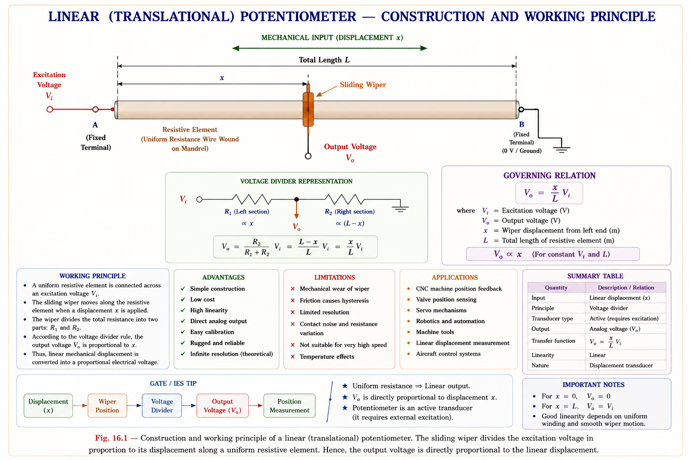
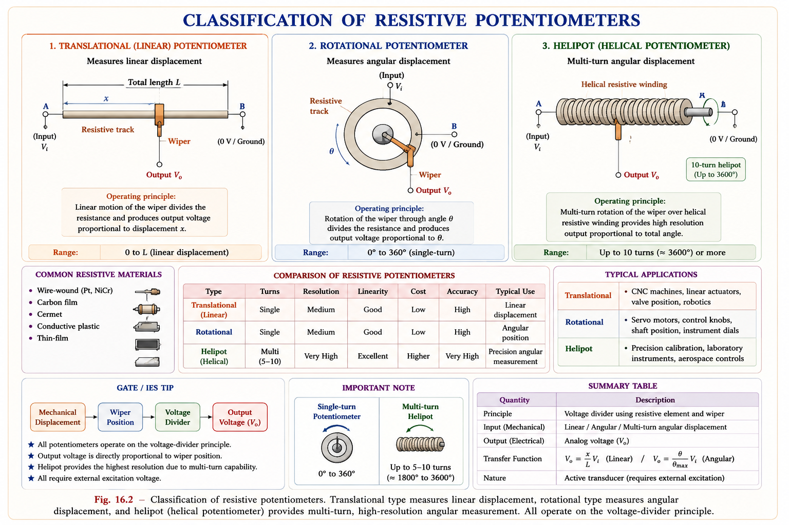
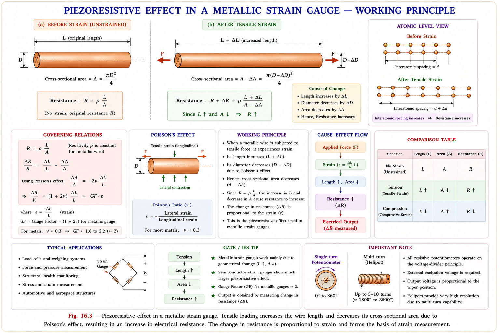
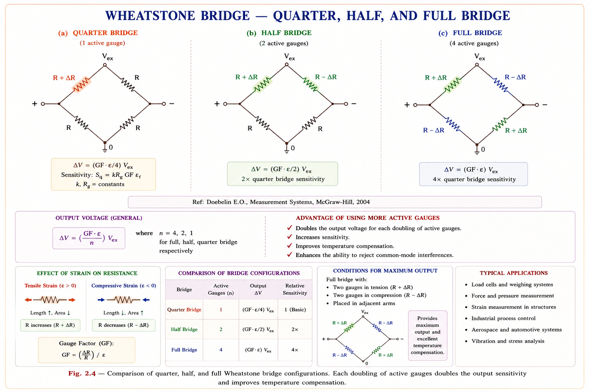
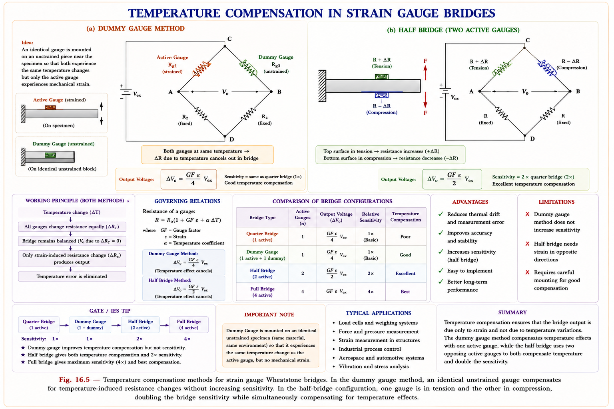
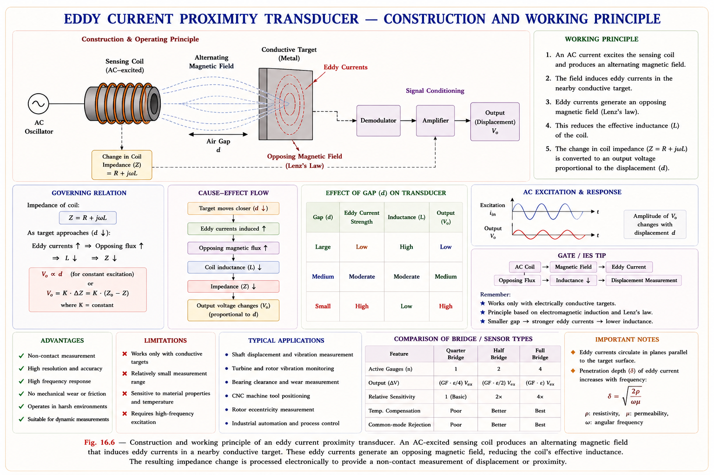
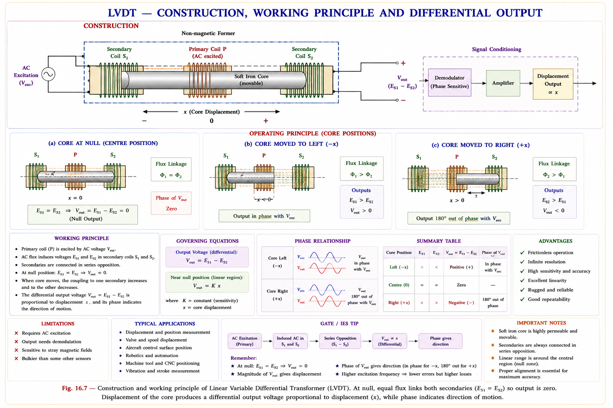
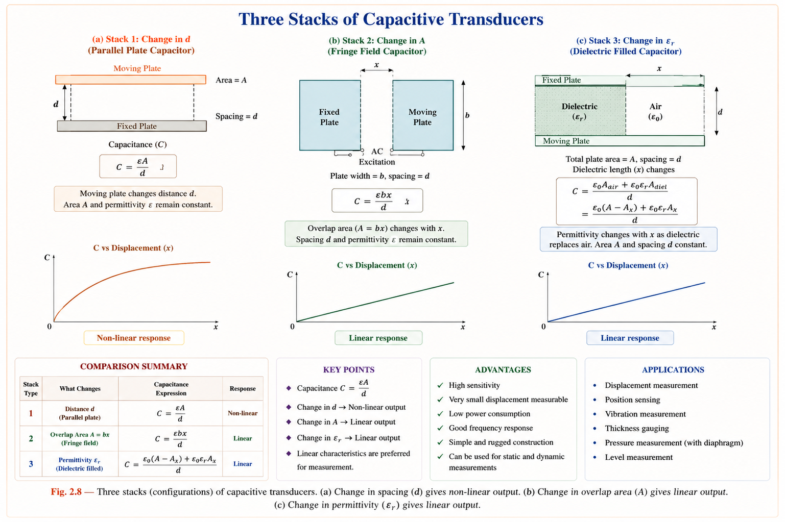

A complete treatment of resistance potentiometers, strain gauges with Wheatstone bridge analysis, LVDT, RVDT, variable inductance sensors, and capacitive transducers — built from standard textbooks for GATE, IES, and PSU examinations.
Of all the electrical parameters, resistance is the most straightforward to measure accurately. Both direct current (DC) and alternating current (AC) measurement circuits can be used for resistance — bridges, potentiometers, and voltage dividers are all well-understood, low-cost, and inherently linear. This makes resistance-based transducers the most widely deployed class in industrial instrumentation.[1]
The fundamental relationship governing all resistive transducers is:
where \(\rho\) is the resistivity of the material (Ω·m), \(L\) is the length (m), and \(A\) is the cross-sectional area (m²). Any physical measurand that causes a change in L, A, or \(\rho\) can therefore be sensed by a change in resistance. This single equation is the design basis for all electrical resistance transducers.[2]
| What Changes? | Primary Sensing Mode | Quantities Measurable (via secondary) |
|---|---|---|
| Length L | Linear and angular displacement | Temperature, pressure, force, torque, level, density, viscosity, velocity |
| Length L and Area A together | High-pressure strain | Force, stress, torque, pressure, weight, acceleration |
| Resistivity ρ | Temperature (piezoresistive effect) | Thermal conductivity, gas flow, wind velocity, humidity, radiation |
Resistance change can be measured with extremely high precision using a Wheatstone bridge — fractional changes as small as 1 part in 10⁶ (1 µΩ/Ω) can be resolved. No other passive electrical parameter offers this level of measurement convenience.
A resistive potentiometer (POT) is the simplest form of displacement-to-voltage transducer. It consists of a resistive element — either wire-wound on a mandrel or a conductive film deposited on a substrate — and a sliding contact called a wiper. The wiper divides the total resistance in a ratio directly proportional to its displacement.[1]

where \(x\) is the wiper displacement, \(X_t\) is the total stroke length, and \(e_i\) is the excitation voltage. The sensitivity \(S\) (V/m) increases with higher excitation voltage, but the maximum excitation is power-limited by the heat dissipation capacity of the resistive element.
where \(P_{\max}\) is the rated power of the POT and \(R_P\) is its total resistance. This reveals a fundamental conflict: high sensitivity requires high \(e_i\), but high \(e_i\) demands either a large \(R_P\) (which degrades linearity when loaded) or a very high power rating (which increases size and cost).[1]

For good linearity, the resistance of the POT (\(R_P\)) should be small compared to the load resistance \(R_L\) (so that \(R_L\) does not distort the voltage divider). But for good sensitivity, a high excitation voltage is needed, which in turn requires a high \(R_P\) to limit dissipation. These two requirements directly conflict — a compromise is always necessary.[1]
A strain gauge is a resistive transducer that measures mechanical strain (and thereby stress) by exploiting the fact that when a metallic conductor is mechanically deformed, both its geometry and its resistivity change — producing a measurable change in electrical resistance. The underlying phenomenon is called the piezoresistive effect.[2]
William Thomson (Lord Kelvin) discovered in 1856 that the electrical resistance of copper and iron wires changes when subjected to mechanical strain. The word "piezo" comes from the Greek for "pressure." The effect has two components: (1) geometric change (length increases, area decreases) and (2) change in intrinsic resistivity of the material under stress.

| Type | Construction | Gauge Factor | Key Characteristic |
|---|---|---|---|
| Unbonded Metal Wire | Fine wires stretched between pins; wire is free (unbonded) | 2–4 | Used in force/pressure sensors; no bonding adhesive needed |
| Bonded Metal Wire | Fine wire arranged in grid, bonded to thin backing paper/epoxy | 2–4 | Good frequency response; most common for structural testing |
| Bonded Metal Foil | Etched metal foil grid on polyimide backing | 2–4 | Better heat dissipation, thinner, most widely used today |
| Semiconductor (Si) | Doped silicon crystal element | 50–200 | Very high sensitivity but highly temperature-sensitive and non-linear |
| Diffused Strain Gauge | Piezoresistive elements diffused directly into silicon diaphragm | 50–150 | Used in MEMS pressure sensors; no bonding adhesive |
The Gauge Factor (GF) is the fundamental sensitivity parameter of a strain gauge. It quantifies how much resistance change results per unit of mechanical strain.[2]
Consider a cylindrical wire of length \(L\), diameter \(D\), cross-sectional area \(A = \pi D^2/4\), and resistivity \(\rho\). Its resistance is:
Taking the logarithmic differential (to handle multiplicative changes):
Since \(A = \pi D^2/4\), we have \(dA/A = 2\,dD/D\). By Poisson's law, the lateral strain is related to the longitudinal strain \(\varepsilon = dL/L\) by:
Substituting back:
| Material | Poisson's Ratio ν | Geometric term (1+2ν) | Piezoresistive term | Typical GF |
|---|---|---|---|---|
| Metallic (Cu, Ni) | ~0.3 | 1.6 | ~0.4 | ≈ 2 |
| Constantan alloy | ~0.3 | 1.6 | ~0.4 | 2.0–2.1 |
| Silicon (p-type) | ~0.28 | 1.56 | ~100–150 | 100–170 |
| Germanium | ~0.28 | 1.56 | ~40–100 | 50–150 |
The simplified formula \(GF = 1 + 2\nu\) applies only when the piezoresistive contribution (\(\Delta\rho/\rho/\varepsilon\)) is negligible — valid for most metallic gauges. For semiconductor gauges, the piezoresistive term dominates (it is 50–100× larger than the geometric term), so \(GF \approx \Delta\rho/\rho/\varepsilon\).
Because the resistance change in a strain gauge is typically very small (often a fraction of an ohm out of several hundred ohms), direct resistance measurement is impractical. The Wheatstone bridge is used to convert small resistance changes into measurable voltage changes with high sensitivity and the ability to reject common-mode interferences.[1]

For a Wheatstone bridge with excitation voltage \(V_{ex}\), balanced initially with all arms equal to \(R\), and one arm changed to \(R + \Delta R\) (quarter bridge):
The approximation holds for small strains (\(\Delta R/R \ll 1\)). The sensitivity of the three bridge configurations:
Metallic strain gauges are sensitive not only to mechanical strain but also to temperature — the resistance of the gauge wire changes with temperature independently of strain. This thermal apparent strain is an error that can completely mask the mechanical strain being measured.[2]

| Method | How it Works | Sensitivity Gain | Temp. Compensation |
|---|---|---|---|
| Dummy Gauge | Identical gauge bonded to same material but unstrained; placed in adjacent bridge arm | None (same as quarter) | Full (both gauges same temp) |
| Adjacent Arm (Half Bridge) | Two active gauges, one in tension one in compression, in adjacent arms | 2× (output doubled) | Full |
| Full Active Bridge | Four active gauges: two in tension, two in compression | 4× | Full |
| Self-compensating Gauges | Gauge alloy chosen to match TCE of test specimen; net thermal apparent strain ≈ 0 | None | Partial to full |
Inductive transducers exploit changes in the inductance of a coil to sense displacement, force, pressure, or velocity. They are entirely contactless (no sliding wiper) and therefore offer infinite resolution, no friction, and extremely long life — key advantages over potentiometric sensors.[1]
The self-inductance of a coil wound on a magnetic core is:
where \(N\) is the number of turns, \(\mathcal{R} = l/(\mu A)\) is the magnetic reluctance, \(\mu\) is the effective permeability, \(A\) is the cross-sectional area, and \(l\) is the magnetic path length. Any variation in N, \(\mu\), \(A\), or \(l\) changes the inductance \(L\).
| Operating Principle | What Changes? | Sensor Type | Application |
|---|---|---|---|
| Change in self-inductance | Air gap length l or core area A changes | Variable reluctance transducer | Pressure, displacement |
| Change in mutual inductance | Coupling coefficient K between two coils changes | LVDT, RVDT | Linear/angular displacement |
| Eddy current effect | Conducting plate proximity reduces coil inductance | Eddy current proximity probe | Displacement, thickness, vibration |
When two coils of self-inductances \(L_1\) and \(L_2\) are magnetically coupled with coupling coefficient \(K\), the mutual inductance is:
When connected in series, the effective inductance can be varied between \(L_1 + L_2 - 2M\) (series opposing) and \(L_1 + L_2 + 2M\) (series aiding) by moving one coil relative to the other. This is the basis of the differential transformer transducer (LVDT).

The LVDT is the most widely used inductive displacement transducer in industrial metrology. It is a transformer-based device in which the coupling between the primary and two secondary windings varies with the position of a movable ferromagnetic core. It combines infinite mechanical resolution, frictionless operation, and excellent linearity — making it the gold standard for precision displacement measurement.[1]

The sensitivity \(K\) (mV/mm per V of excitation) depends on the excitation frequency, core material, winding geometry, and the number of secondary turns. Within the linear range, the relationship is truly linear. Outside this range (at large displacements), the output saturates and becomes non-linear.
The LVDT is an amplitude-modulated (AM) system. If the excitation frequency is \(f_{exc}\) and the core oscillates at frequency \(f_x\) (dynamic measurement), the output voltage spectrum contains sidebands at:
So a 400 Hz excitation and 10 Hz mechanical vibration produces output components at 390 Hz and 410 Hz. This is a frequently tested GATE concept.
The RVDT (Rotary Variable Differential Transformer) is the angular equivalent of the LVDT. It uses a cam-shaped ferromagnetic core that rotates within the winding assembly, varying the mutual inductance between primary and secondary coils as a function of the angular position of a shaft.[1]
where \(\theta\) is the angular displacement and \(K_\theta\) is the angular sensitivity (V/radian). Like the LVDT, the phase of \(V_{out}\) relative to the excitation indicates the direction of rotation (clockwise vs. counter-clockwise).
| Device | Principle | Output Form | Primary Application |
|---|---|---|---|
| Synchro | Electromagnetic — rotating coil in stator field. Two types: control/error-detecting and torque-transmission. | Three-phase AC voltage set encoding angle | Angle transmission, servo error detection, radar antenna systems |
| Resolver | Two-phase output proportional to sin(θ) and cos(θ) of shaft angle | V₁ = V·sin(θ), V₂ = V·cos(θ) | Vector composition, Cartesian coordinate conversion, navigation |
| Computing Resolver | Same as resolver but used for mathematical operations | Sine and cosine functions, tangent | Geometric calculations, vector algebra in analog computers |
Capacitive transducers are based on the parallel-plate capacitor equation. They offer extremely small force requirements, high sensitivity, wide frequency response (up to 50 kHz), and excellent resolution — making them ideal in situations where stray magnetic fields make inductive sensors impractical.[2]
where \(\varepsilon_0 = 8.854 \times 10^{-12}\) F/m is the permittivity of free space, \(\varepsilon_r\) is the relative permittivity of the dielectric, \(A\) is the overlapping plate area (m²), and \(d\) is the plate separation (m). Any of the three quantities — \(A\), \(d\), or \(\varepsilon_r\) — can be the variable controlled by the measurand.

When the plate separation \(d\) is the variable, the capacitance varies as \(C \propto 1/d\) — this is a hyperbolic (non-linear) relationship. To achieve linearity, a differential configuration (two capacitors, one increasing while the other decreases) is used. For small displacements \(\Delta d \ll d_0\), the differential output is approximately linear.
| Topic | What GATE Tests | Probability |
|---|---|---|
| LVDT output at null / direction sensitivity | Conceptual: why V_out=0 at null; phase for direction | 🟢 High |
| Gauge Factor formula | Numerical: compute GF, find ΔR; identify GF≈1+2ν condition | 🟢 High |
| Wheatstone bridge output | Numerical: find V_out for quarter/half/full bridge | 🟢 High |
| LVDT frequency content | \(f_{exc} \pm f_x\) type question | 🟢 High |
| Capacitive transducer modes | Which mode is linear, which is non-linear | 🟡 Medium |
| Potentiometer loading error | Linearity vs. sensitivity conflict | 🟡 Medium |
| Temperature compensation | Why dummy gauge works, adjacent arm vs. opposite arm | 🟡 Medium |
| Synchro vs. resolver | Application difference | 🔴 Low |
Explanation: The LVDT is an amplitude-modulated system. The output is a carrier (500 Hz) modulated by the measured vibration (20 Hz). AM theory gives sidebands at \(f_{exc} \pm f_x = 500 \pm 20\) Hz, i.e. 480 Hz and 520 Hz. The original frequencies (500 Hz and 20 Hz) are suppressed — only the sidebands appear at the differenced output.
Step-by-step: \(GF = \Delta R/(R\cdot\varepsilon)\), so \(\Delta R = GF \times R \times \varepsilon = 2 \times 120 \times 500\times10^{-6} = 2\times120\times5\times10^{-4} = 0.12\,\Omega\). The fractional change is \(\Delta R/R = 1\times10^{-3} = 0.1\%\) — this is why a Wheatstone bridge is essential to detect such small changes.
Explanation: \(C = \varepsilon A/d\), so when \(d\) changes, \(C\propto 1/d\) — a hyperbolic (non-linear) relationship. When \(A\) changes linearly, \(C\propto A\) — a perfectly linear relationship. Capacitive transducers require extremely small forces (an advantage) and work well in magnetic environments (unlike inductive sensors).
Explanation: Quarter bridge: \(\Delta V = (GF\cdot\varepsilon/4)\cdot V_{ex}\). Half bridge (adjacent arms, opposing strains): \(\Delta V = (GF\cdot\varepsilon/2)\cdot V_{ex}\). The sensitivity is exactly doubled. Full bridge (four active gauges) quadruples the sensitivity. Additionally, the half and full bridge configurations provide complete temperature compensation.
\(e_o = (x/X_t)\cdot e_i\). Sensitivity = \(e_i/X_t\) (V/m). Linearity ↔ Sensitivity conflict. Max excitation: \(e_i = \sqrt{P \cdot R_P}\). Helipot \(\rightarrow\) up to 3500° rotation.
Resistance changes due to length\(\uparrow\), area\(\downarrow\), and resistivity change when strained. Lord Kelvin, 1856. Basis of all metal strain gauges.
\(GF = \frac{\Delta R/R}{\varepsilon} = 1 + 2\nu + \frac{\Delta \rho}{\rho \varepsilon}\). Metals: \(GF \approx 2\) (geometric dominant). Silicon: \(GF \approx 50\text{--}170\) (piezoresistive dominant). Constantan: \(GF \approx 2.0\).
Quarter: \(\Delta V = (GF\cdot\varepsilon/4)\cdot V_{ex}\). Half: \(\Delta V = (GF\cdot\varepsilon/2)\cdot V_{ex}\). Full: \(\Delta V = GF\cdot\varepsilon\cdot V_{ex}\). Each doubling of active arms doubles sensitivity + gives full temp compensation.
Dummy gauge: identical gauge in adjacent arm, unstrained, same temperature. Cancels thermal \(\Delta R\). Half/Full bridge with opposing gauges: same effect + extra sensitivity.
\(V_{out} = E_{S1} - E_{S2} = K\cdot x\). Null: \(V_{out} = 0\). Phase \(\rightarrow\) direction. Frequency output: \(f_{exc} \pm f_x\). Infinite resolution. Frictionless. AC excitation needed.
RVDT: angular equiv. of LVDT, \(V_{out} = K_\theta\cdot \theta\). Synchro: angle \(\rightarrow\) 3-phase AC. Resolver: \(V_1 = V\cdot\sin(\theta)\), \(V_2 = V\cdot\cos(\theta)\) — gives Cartesian coordinates.
Mode 1 (d varies): \(C \propto 1/d\) — NON-LINEAR. Mode 2 (A varies): \(C \propto A\) — LINEAR. Mode 3 (ε_r varies): \(C \propto \varepsilon_r\) — LINEAR. Use differential config. to linearise Mode 1.
Plate: \(S = \varepsilon w/d\) (F/m). Cylinder: \(S = 2\pi\varepsilon/\ln(D_2/D_1)\). Angular: \(S = \varepsilon r^2/(2d)\) (F/rad). High input impedance, very small force required.
Potentiometer (R changes by L), Inductive (LVDT/Eddy current — L changes), Gauge — Strain gauge (R changes by ρ and geometry), Capacitive (C changes by A, d, or ε_r). Within strain gauges: "Gauge Factor = 1 + 2ν + piezoresistive" — remember "Two-nu" = geometrical contribution.
Type your question about resistive, inductive, or capacitive transducers. Answers are drawn from Doebelin, Bentley, and Golding & Widdis.
Temperature Measurement Transducers — RTD (Platinum resistance thermometer), Thermistor (NTC characteristics), Thermocouple types and laws (Seebeck, Peltier, Thomson), cold-junction compensation, and complete GATE-level worked problems on temperature measurement circuits.
All technical content, derivations, and diagrams are original to Aarova AI, derived from the standard textbooks listed below. No content reproduced from ACE Engineering Academy or any coaching institute material.